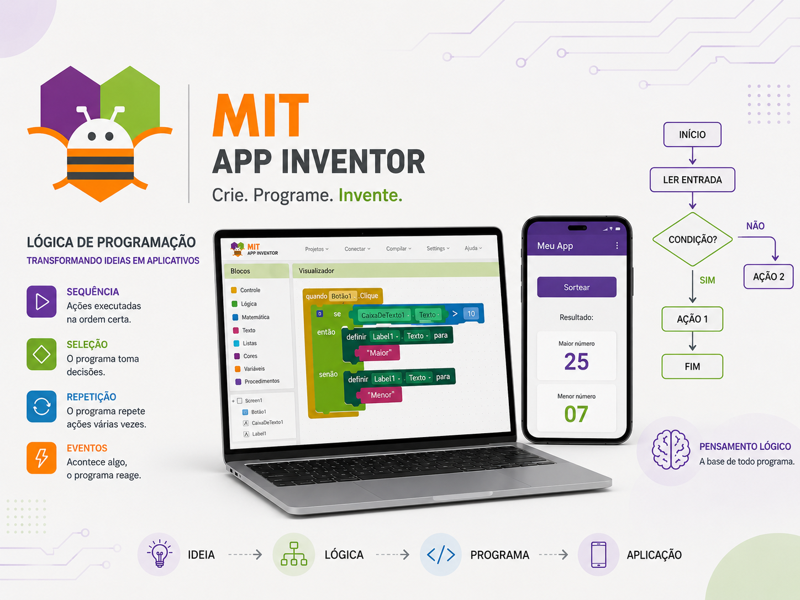
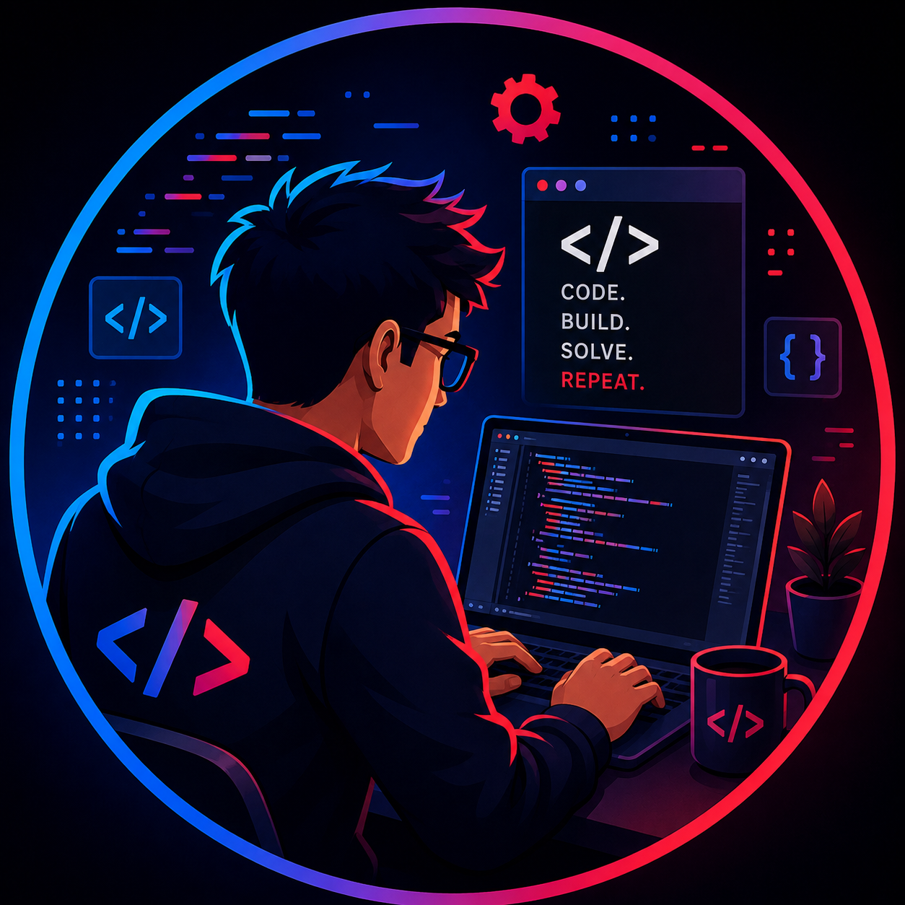

Mit App Inventor
O MIT App Inventor é uma plataforma gratuita desenvolvida pelo MIT que permite criar aplicativos de forma simples e intuitiva. Ela utiliza programação por blocos, facilitando o aprendizado mesmo para quem está começando a programar.
Avalie o meu Trabalho
Eu ensino Técnicas de programação para o 1º ano do Ensino Médio + Técnico de Informática & . Eu ensino por meio do aplicativo MitAppInventor mostrando como criar jogos e entre outras coisas interativas com o usuário.
O MIT App Inventor é uma plataforma gratuita desenvolvida pelo MIT que permite criar aplicativos de forma simples e intuitiva. Ela utiliza programação por blocos, facilitando o aprendizado mesmo para quem está começando a programar.
O Compara Sorteio, feito no MIT App Inventor, sorteia três números e identifica o maior e o menor. Cada botão realiza o sorteio de um número, exibido em campos que começam com 0 e não permitem digitação. Depois, o aplicativo compara os três valores usando condições. Por fim, mostra na tela o maior e o menor número sorteado.
O MIT App Inventor é importante na educação porque facilita o aprendizado da programação de forma simples e visual. Por meio de blocos, os alunos desenvolvem a lógica de programação sem precisar escrever códigos complexos. Além disso, estimula o raciocínio lógico, a criatividade e a resolução de problemas, permitindo que os estudantes criem seus próprios aplicativos.

O MIT App Inventor utiliza uma programação visual baseada em blocos, facilitando o aprendizado da lógica de programação. A lógica utilizada envolve eventos, variáveis, condições, operadores e repetições, que são organizados para determinar o funcionamento do aplicativo. Por exemplo, um botão pode gerar um evento que faz o aplicativo executar determinada ação. As condições, como “se” e “senão”, permitem que o programa tome decisões de acordo com cada situação. As variáveis são usadas para armazenar e modificar informações durante a execução do aplicativo. O App Inventor também trabalha com algoritmos, ajudando o aluno a organizar os passos necessários para resolver um problema. A programação por blocos permite que o estudante se concentre na lógica do programa, sem se preocupar inicialmente com a sintaxe de uma linguagem tradicional. Além disso, testar o aplicativo e corrigir erros ajuda a desenvolver o raciocínio lógico e a capacidade de resolução de problemas. Dessa forma, o MIT App Inventor torna o aprendizado da programação mais prático, visual e acessível, principalmente para quem está começando.

Estrutura de decisão IF no MIT App Inventor A estrutura de decisão IF (SE) permite que o aplicativo tome decisões de acordo com uma determinada condição. Condição simples: utiliza SE... ENTÃO. Quando a condição é verdadeira, o programa executa uma ação. Se for falsa, simplesmente não executa aquela ação. Essas estruturas são importantes para criar aplicativos mais interativos e inteligentes, permitindo que o programa responda de maneiras diferentes dependendo da situação.

A condição composta utiliza a estrutura SE... ENTÃO... SENÃO para que o aplicativo possa tomar uma decisão entre duas possibilidades. No exemplo da imagem, a variável “casado” recebe o valor false (falso). O programa verifica essa informação através do SE: SE “casado” for verdadeiro (true), o aplicativo exibe “Você é casado!”. SENÃO, quando a condição for falsa (false), o aplicativo exibe “Você é solteiro!”. Dessa forma, a condição composta sempre oferece dois caminhos possíveis, dependendo do resultado da condição. Ela é muito útil para criar programas que precisam analisar uma situação e executar uma ação diferente para cada resultado.
Primeiro, usamos variáveis para armazenar informações como vidas = 5 e tempo = 120. O Button inicia o jogo, reiniciando as vidas e o tempo e ativando o Clock. O Canvas é a área onde o ImageSprite, que representa o fantasma, aparece. O Clock.Timer diminui o tempo e pode mudar a posição do fantasma usando números aleatórios. Quando o jogador clica no fantasma, usamos o bloco ImageSprite.Click para detectar o clique. O Notifier mostra uma mensagem perguntando se o jogador deseja continuar. Usamos se... então... senão para verificar se ele escolheu “Sim” ou “Não”. Também podemos usar E e OU para criar condições compostas, como tempo <= 0 OU vidas = 0. Quando o tempo chega a zero, o Clock é desativado, o fantasma desaparece e aparece “Tempo Esgotado”. Assim, o jogo utiliza principalmente variáveis, eventos, Clock, ImageSprite, Canvas, Notifier, condições e números aleatórios.
Clean Code busca criar códigos simples, organizados e fáceis de entender. Práticas como nomes claros, funções pequenas e evitar repetições facilitam a manutenção e reduzem erros. É muito valorizado no mercado por melhorar a qualidade e a organização dos projetos.
Clean Code é um conjunto de práticas para escrever códigos mais simples, organizados e fáceis de entender. Utilizar nomes claros, evitar repetição e dividir o programa em pequenas funções facilita a manutenção e reduz problemas. Essa técnica é muito valorizada porque empresas procuram profissionais capazes de criar códigos eficientes, legíveis e fáceis de manter.

Desenvolvedor de Software
O desenvolvedor de software cria aplicativos, sites e sistemas para empresas. É uma das áreas mais conhecidas da programação e está entre as funções com maior crescimento esperado nos próximos anos.
Inteligência Artificial e Dados
Profissionais de IA e análise de dados utilizam programação para criar modelos, automatizar tarefas e transformar grandes volumes de informações em resultados úteis. IA, Big Data e Machine Learning estão entre as habilidades que mais devem crescer no mercado.
Cibersegurança
Na cibersegurança, a programação é utilizada para proteger sistemas, redes e informações contra ataques digitais. A demanda por conhecimentos em redes e segurança vem crescendo e aparece entre as principais habilidades tecnológicas do futuro.